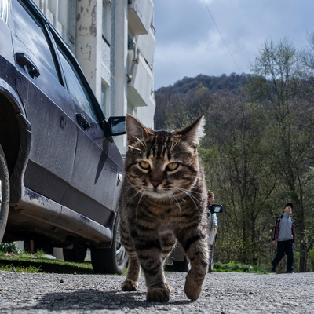

Жил-был Кот в одном примечательном ауле среди гор. На самом деле аул был научным поселком под горой, на которой находился Самый Большой Телескоп. И прожил бы Кот свою кошачью жизнь без забот, если бы не поступь Прогресса, неумолимая, как осенний дождь.
Прогресс явился под модным именем Провайдер и провел в Поселок толстый кабель из множества медных проводков. Все жители Поселка ходили возбужденные и кричали: Интернет пришел! Хотя пришел, конечно же, Провайдер. Потом жители, накричавшись, садились за компьютер и замолкали. Уж очень притягательный он был, этот Интернет.
Кот же поначалу возмутился. Всем известно, что только он, Кот, может ходить по поселку сам по себе, и никакой Провайдер тут не указ. Но громкое возмущенное мяуканье не меняло обстановки: людей от мониторов было не оторвать, и даже вискаса в миске Кота поубавилось. Надо было что-то придумать.
И тут в голову Кота пришла неожиданная мысль. Если его мяуканье из-под стола уже не замечают, значит надо зайти с другой стороны! А именно, с другой стороны монитора. Так у Кота появилась своя собственная Страница.
Заходя на сайт Кота, люди вспомнили о нем. Так Кот смог решить сразу несколько проблем:
А еще у Кота появился Друг. Как ни странно, им оказалась... Собака.